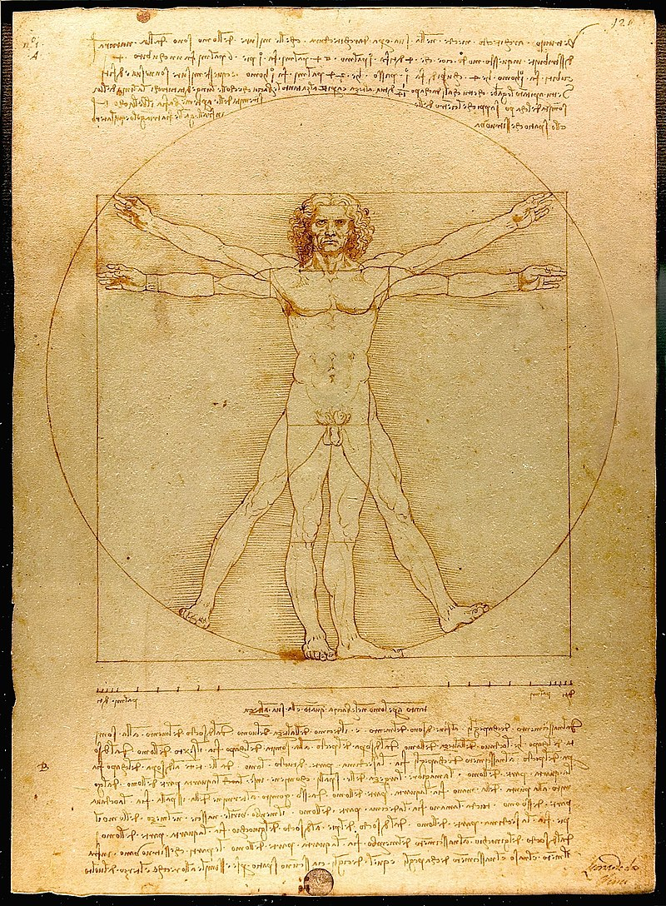
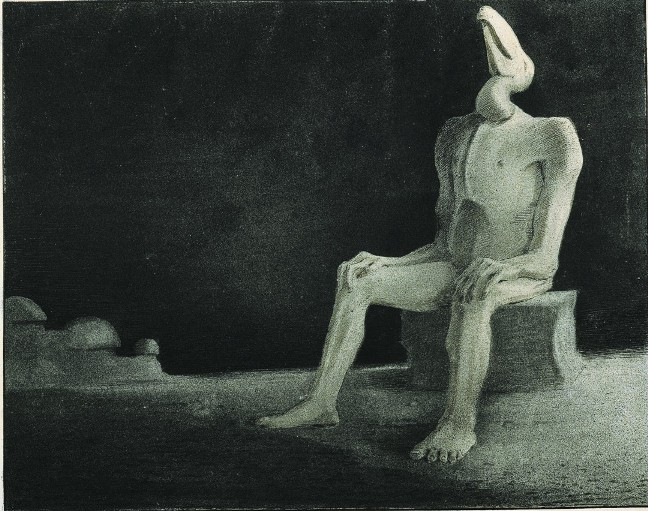

Le sens du terme « dessin » évolue avec l'histoire des arts visuels. Le mot dessin est tiré de dessigner, avec l'influence de l'italien disegno signifiant représentation graphique (1444). Le terme italien signifiait à la fois la pratique, et le projet ou intention. Ce double sens a été conservé avec le mot français dessein. Ce n'est qu'au milieu du XVIIIe siècle que dessin (sans e après ss) ne signifie plus que la représentation. Le terme anglais design, qui vient de l'italien designo et du français dessein, a conservé le sens de projet ou de conception. Il faut envisager les deux sens du mot, même si l'amateur peut s'intéresser aux dessins produits à titre de préparation d'un ouvrage aussi bien qu'à ceux valant pour eux-mêmes (Jacquet 2010).
Le dessin, comme projet d'un ouvrage, se trouve partout dès le Moyen Âge dans les arts plastiques, y compris l'orfèvrerie et la mode. Il résume et développe la pensée plastique de l'auteur, et lui permet de la présenter à ses clients ou commanditaires, sous une forme plus légère et demandant moins de temps que la réalisation définitive. Les dessins n'étaient pas en général destinés à être conservés ; cependant, selon Paul Valéry, « le souci de la personne et de l'instant l'emportant sur celui de l'œuvre en soi et de la durée, la condition d'achèvement a paru contraire à la « vérité », à la « sensibilité » et à la manifestation du « génie » l'esquisse a valu le tableau ». Le goût s'est ainsi porté vers les projets, études et dessins préparatoires ; cette évolution commence en France à la fin du XVIIIe siècle. La première exposition des dessins du Cabinet du Roi a eu lieu au Louvre en 17973.
La conception du dessin comme un art autonome, ne visant à rien d'autre que lui-même, naît des discussions dans le milieu des artistes et des amateurs sur les qualités plastiques et les principes gouvernant la peinture. La Querelle du coloris oppose au XVIIe siècle les partisans de la couleur à ceux du dessin. Le « dessin », dans ces discussions, ne dépend ni de la technique, ni du support. Il s'agit principalement de la ligne de contour des sujets, opposée à la surface colorée et à ses modulations, comme l'a fait Léonard de Vinci. Les polémiques opposent ceux qui prennent exemple sur Poussin pour privilégier le dessin, allant jusqu'à considérer avec méfiance le raccourci, les recouvrements de personnages, les ombres fortes, à ceux qui, admirant Rubens, accordent plus de valeur à ceux qui savent nuancer, juxtaposer, organiser les couleurs, avec une touche visiblement variée. Ce sens restreint du « dessin », associé à la perspective linéaire, va se poursuivre jusqu'au XXe siècle. Les rapports entre dessin et peinture fluctuent. L'impressionnisme reproche en général au dessin le caractère intellectuel et contraignant que lui attribuent les courants picturaux qui l'ont précédé. Le cubisme renoue avec le dessin, sans l'obligation de présenter, par la perspective, un point de vue unique.
Avec Flaxman commence une succession d'artistes qui ne présentent que le dessin linéaire. Au XIXe siècle, les dessinateurs trouvent avec la lithographie et le dessin de presse des moyens de vivre de leur activité, sans nécessairement produire autre chose. Bien que les techniques de reproduction contraignent un peu leur style, ils peuvent aussi bien réaliser des peintures dessinées, rendant le clair-obscur par des hachures, que des purs dessins linéaires, comme l'ont fait Picasso, Matisse ou André Lhote.
Le dessin animé emploie depuis son invention dans les années 1920 des quantités de dessinateurs.
Dans le dernier tiers du XXe siècle, la bande dessinée cesse de s'adresser spécifiquement aux enfants et le dessin narratif, nourri des techniques du dessin de presse, du cinéma, de la littérature, devient une des branches importantes de l'art du dessin.
Lorsque le projet graphique vise à la durée, choisissant son matériel à cet effet, on parle de peinture. L'acte de dessiner, sur pierre ou sur plâtre, sur bois, sur toile peut bien en être à la base : la peinture se définit, par opposition au dessin, comme devant durer.
Si pour Léonard de Vinci, le dessin du contour est une partie de la peinture, pour Braquemond, quatre siècles plus tard, « le mot « dessin » résume tous les termes de la langue des arts plastiques Les expressions : trait, modelé, couleur, ornement, forme, ligne, valeur, effet, etc. ne servent que pour aider par l'analyse à la signification du mot dessin ».
Il n'y a pas de différence fondamentale entre le dessin et la peinture, si ce n'est que, d'après certains théoriciens de l'art, le dessin est monochrome dans son essence, la peinture colorée. Mais des dessins peuvent être en couleurs, soit directement dans le tracé, soit par coloriage dans un deuxième temps. Une peinture peut être linéaire et peut être monochrome comme c'est le cas des grisailles. La plupart des peintures, surtout lorsqu'elles sont figuratives, sont préalablement dessinées, ou dessinées en cours d'élaboration. On dessine aussi bien avec une brosse large qu'avec un crayon affûté, même si la matière est différente. On parlera donc de dessin lorsque les contours, les tracés, demeurent apparents, par rapport à des œuvres où dominent taches colorées, aplats de couleur.
Le dessinateur Alfred Kubin, traitant du dessin, non comme projet, mais « comme une fin en soi immédiate », écrit : « Cet art répond à une modeste impulsion. Il ne rivalise pas avec les phénomènes de la nature mais se contente d'en produire des signes. Il est symbolique ». C'est, pour lui, cette modestie qui distingue le dessinateur, qui l'amène à limiter son domaine d'exploration au papier et à l'encre de Chine, à la plume et au pinceau, qu'il étudie à fond. « Ma contemplation intérieure s'est éclaircie : ma vision s'est alors déplacée vers un assemblage de lignes aussi rigoureux qu'un système économique » (Kubin 2015, p. 37).
Les dessins ne sont pas conçus pour être conservés et exposés ; ces objectifs entraînent des procédés qui en entraveraient la légèreté et la spontanéité (Jacquet 2010). Ceci n'empêche que depuis la Renaissance, on a conservé comme des reliques précieuses les dessins et notes d'artistes vénérés comme Léonard de Vinci9. Pour les conservateurs, ce qui caractérise le dessin, c'est sa fragilité. L'exposition à l'air et à la lumière jaunit les papiers et décolore les encres ; la flamme le détruit instantanément, l'humidité y favorise la moisissure ; sali, le dessin est difficilement nettoyé ; les pigments poudreux des crayons, fusains, craies et sanguines passent d'une page sur l'autre ; le papier se plisse définitivement en cas de mauvaise manipulation (VTT, p. 1111sq). Les vernis dits fixatifs pénètrent le papier, et ne peuvent, s'ils ont jauni, être éliminés et remplacés.
La conservation des dessins sur papier implique en général un traitement biocide chimique ou par rayonnement ionisant (VTT, p. 1129-1130). Dans les collections des musées, les dessins sont conservés dans des locaux spécialement prévus, et ne sont présentés qu'occasionnellement, dans des salles à l'éclairage atténué. La mise en valeur du dessin inclut souvent un large passe-partout et une vitre de protection ; les originaux non montés se présentent sur un champ, dans une vitrine peu inclinée.
Les conservateurs doivent encore, pour organiser et valoriser les collections, identifier les auteurs. Les artistes n'ont souvent pas signé ce qu'ils considéraient comme des documents de travail. Les inscriptions peuvent être le fait de marchands ou de collectionneurs qui ont attribué à un maître ce qui est en fait une copie.
Le dessin est généralement plus que le projet d'une gravure. Un maître comme Dürer pouvait dessiner sur le bois, et laisser à un de ses compagnons, anonyme, le soin de le creuser ; mais il avait tracé chacune des lignes de la gravure. Dans le cas où la gravure prenait pour sujet des tableaux célèbres, l'interprétation revenait au graveur, qui lui donnait parfois, bien que le dessin soit dans l'ensemble conforme à l'original, un caractère assez différent, comme Marcantonio Raimondi pour Raphaël.
Au XIXe siècle, la lithographie sur pierre grenée permet aux artistes de dessiner au crayon en vue de la reproduction. Cependant, la contrainte de l'inversion du sujet, qui sera reproduit la droite à gauche, l'interdiction de poser la main sur le support, car elle le marque, poussent la plupart à dessiner d'abord sur papier un projet. Certains artistes laissent à des spécialistes l'interprétation sur la pierre. La production de lithographies connaît une première spécialisation des dessinateurs ; la fabrication d'une lithographie des Voyages pittoresques et romantiques dans l'ancienne France peut faire appel à un dessinateur d'après nature, un lithographe pour le paysage, un pour les figures, un pour la lettre.
La photogravure affranchit le dessinateur de la plupart des difficultés techniques ; il lui suffit de connaître les limites propres à la technique d'impression pour laquelle il travaille. En dessin de presse et en bande dessinée, l'artiste produit en général un dessin linéaire « au trait », encre noire sur papier blanc ; la reproduction photographique élimine la mise en place au crayon et les repères posés en bleu. Les dessins originaux, avec toutes ces marques ou l'on sent « la main et le génie de l'auteur »11, peuvent devenir des pièces de collection.
La technique du dessin évolue avec les supports et les outils. Les hommes préhistoriques dessinent sur des parois, sur des roches, des os, en utilisant d’une part l’incision et d’autre part les pigments colorés appliqués au moyen d’outils rudimentaires. Le dessin plus proche des conceptions actuelles apparaît avec les supports tels que le papyrus, le parchemin, puis le papier, et les outils de traçage comme le calame (roseau), la plume d’oiseau taillée. En Orient prédomine le pinceau. Les Romains utilisent les pointes de métal, ancêtres de la mine de crayon moderne sur un support préparé, enduit d'un mélange, généralement constitué de pigments, de blanc d’Espagne, de gomme arabique et de poudre d’os.
À la fin du XIXe siècle, Jules Adeline définit le dessin comme représentation des objets à l'aide de traits de plume ou de crayon, parmi lesquels se distinguent les dessins aux deux et aux trois crayons, qui sont la pierre noire, la craie blanche et la sanguine, mais aussi le fusain. On distingue aussi les instruments annexes du dessin, règles et compas dont on se passe dans le dessin à main levée.
Le dessin profite aujourd'hui de matériel et de logiciel informatiques qui, l'affranchissant de la réalisation matérielle, permettent des tracés lissés et des possibilités de correction infinies — si toutefois c'est le but de l'artiste.